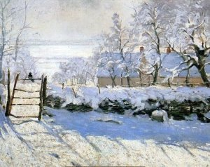

«Сорока»
«Сорока» – картина Клода Моне, написанная в 1968 году и находящаяся сейчас в парижском музее Орсе.На первый взгляд картина кажется очень простой, на ней изображены плетень, сидящая на калитке сорока, фруктовые деревья, дом сбоку и снег. Видно, что на
полотно наносились широкие и быстрые мазки. Но эта зрительная простота буквально очаровывает зрителя, заставляет вглядываться в изображение.